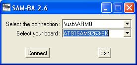

Legacy AT91Bootstrap
Introduction
AT91Bootstrap is a first step bootloader providing a set of algorithms to manage hardware initialization (GPIO, Clock, SDRAM, etc), to download your main application from specified FLASH media to main memory and to start it. In the linux4SAM pre-built demo it is used to configure the hardware and to load and start the standard U-Boot bootloader, it can also be configured to start directly the linux kernel.Load AT91Bootstrap on SAM9 boards
This section describes How to load AT91Bootstrap into the boot media with SAM-BA.- Connect the USB Device Interface to your host machine using the USB Device Cable
- Make sure that the chip can execute the bootROM monitor SAM-BA-boot :
- Start SAM-BA GUI Application
- Select the the board in the drop-down menu and choose the USB Connection

- Eventually plug back a jumper to access the media on which u-boot must be loaded to
- In the main SAM-BA window :
- Choose the proper media tab (DataFlash, NandFlash, etc.) in the SAM-BA GUI interface
- Initialize the media choosing the Enable action in the Scripts rolling menu and press Execute
- Choose Send boot file, press Execute
- Select the at91bootstrap binary file and press Open ; the media is written down
- Close SAM-BA, remove the USB cable
Boot strategies
AT91 chips embed a boot ROM code. It is enabled depending on BMS (Boot Mode Select) pin state on reset. This ROM code scans the contents of different media like SPI DATAFLASH, NAND FLASH or SDCARD to determine if a valid application is available then it download the application into SAM9 internal SRAM and run it. To determine if a valid application is present the ROM code checks the eight ARM exception vectors. If no application is available then SAM-BA application is executed. It waits for transactions either on the USB device, or on the DBGU serial port, Then the SAM-BA tool can be used to program FLASH or EEPROM present on your board. For more information on this topic, please check the corresponding SAM product datasheet section Boot Program . You can find a valuable summary in the document named SAM9 Boot Strategies or see the cross matrix below..ROM Code boot Sequence example
Boot capabilities matrix
Here is :| Product | Boot from DataFlash (SPI0 CS0) |
Boot from DataFlash (SPI0 CS1) |
Boot from NAND Flash |
Boot from SD card |
Boot from NOR Flash |
Boot from Internal Flash {{Only available on products with embedded Flash}} |
|---|---|---|---|---|---|---|
| at91sam9260ek | |
|
|
|||
| at91sam9xeek | |
|||||
| at91sam9261ek | |
|
|
|
||
| at91sam9263ek | |
|
|
|||
| at91sam9rlek | |
|
|
|||
| at91sam9g20ek | |
|
|
|
||
| at91sam9g10ek | |
|
|
|
||
| at91sam9g45ekes | |
|
||||
| at91sam9m10ekes | |
|
|
|||
| at91sam9m10g45ek | |
|
|
Known issues with old AT91Bootstrap
The Dataflash version of AT91Bootstrap (version 1.10 or older) will load a second level bootloader or application from the address0x8000.
Dataflash memories have page size of 1056 bytes, (0x420 hex) and the load address 0x8000 is thus in the middle of a page.
0x8400.
Build AT91Bootstrap from sources
In brief
To compile an AT91Bootstrap project:- go into the board directory
- select your board by going into the corresponding board directory
- select your media by going into the corresponding directory
- run make
cd board/at91sam9260ek/dataflash make cleanand
makeor if you want to specify the cross-compiler :
make CROSS_COMPILE=<path_to_cross-compiler/cross-compiler-prefix->path_to_cross-compiler is only needed if it is not in your
PATH.Usually cross-compiler-prefix- looks like arm-linux- or arm-elf-
r2 - 17 Apr 2018 - 09:49:51 - NicolasFerre
Copyright © by the contributing authors. All material on this collaboration platform is the property of the contributing authors.
Linux® is the registered trademark of Linus Torvalds in the U.S. and other countries.
Microchip® and others, are registered trademarks or trademarks of Microchip Technology Inc. and its subsidiaries. 
Arm® and others are registered trademarks or trademarks of Arm Limited (or its affiliates). Other terms and product names may be trademarks of others.
Ideas, requests, contributions ? Connect to LinksToCommunities page.